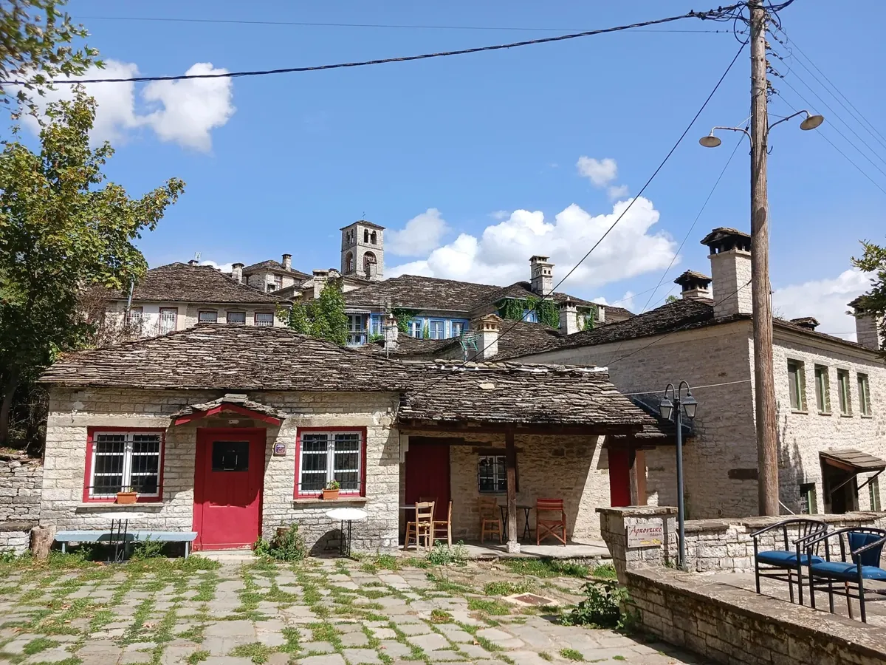
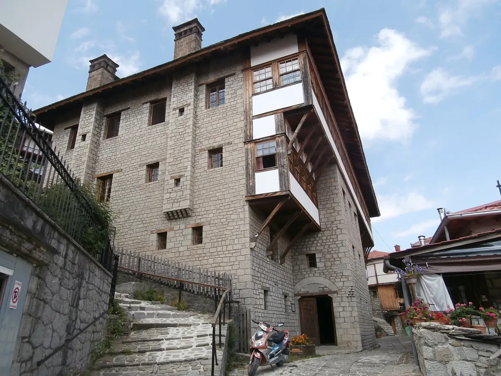
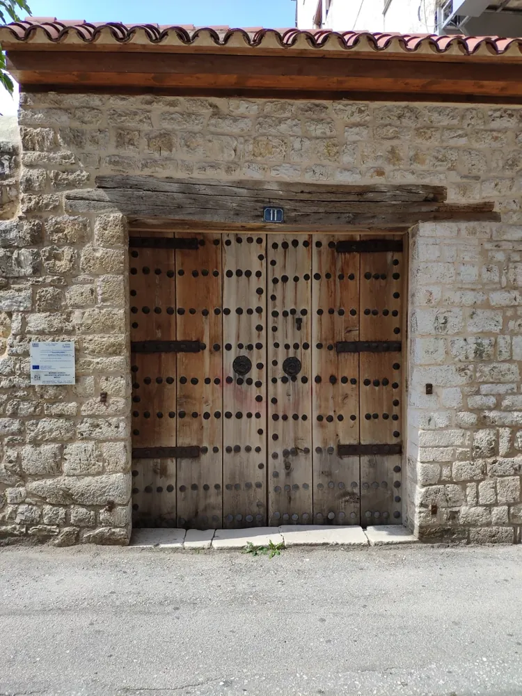
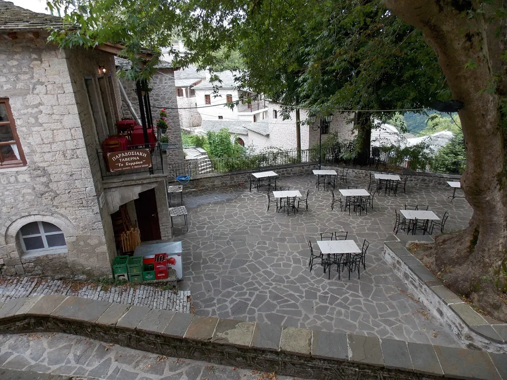
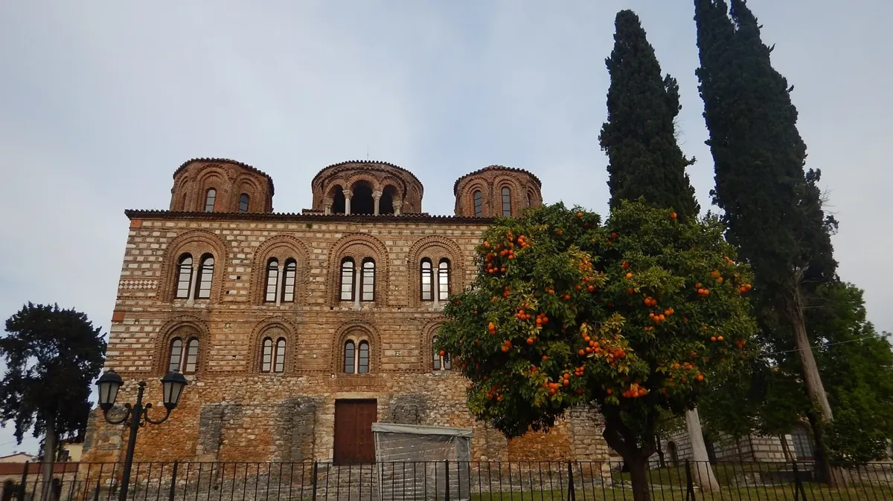
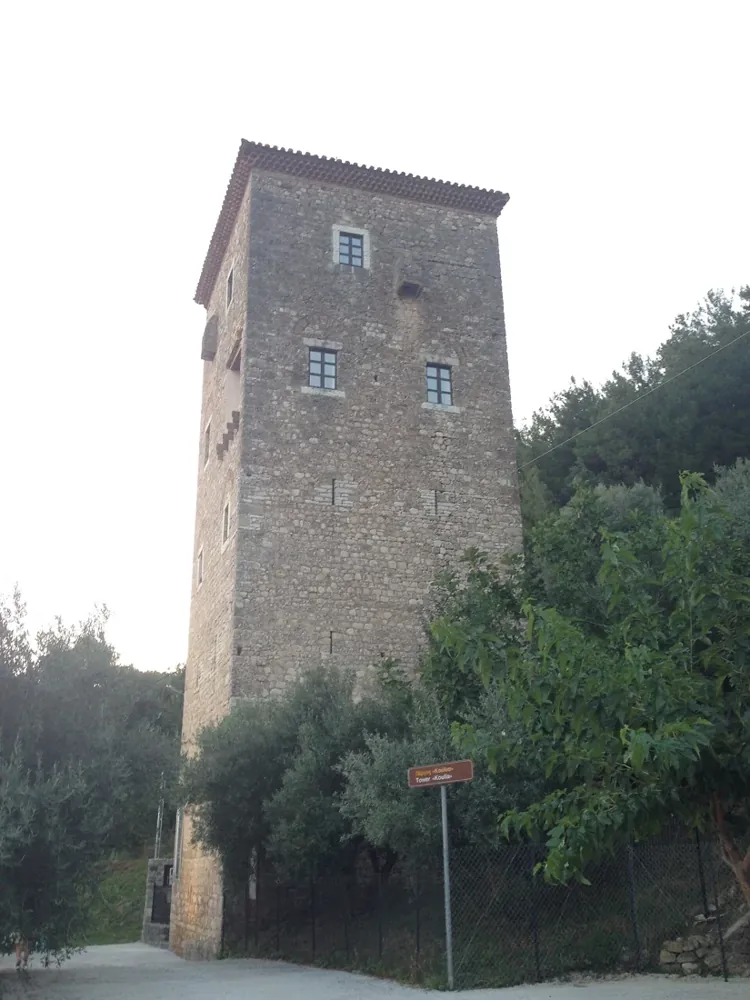
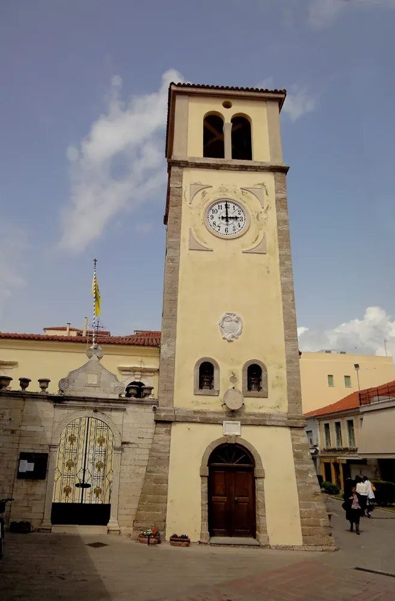
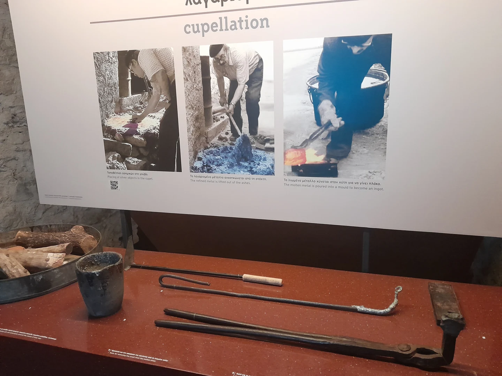

Μια αυλόπορτα στα Γιάννενα, οι στέγες που κατεβαίνουν την πλαγιά στο Ζαγόρι, ένα ξύλινο σαχνισί στο Μέτσοβο. Πίσω από κάθε μορφή υπάρχει μια απόφαση: πώς θα στεγαστεί η οικογένεια, πού θα φυλαχτεί η σοδειά, πώς θα περάσει ο δρόμος, πού θα συναντηθεί το χωριό. Η αρχιτεκτονική της Ηπείρου γίνεται πιο οικεία όταν τη διαβάζουμε μαζί με τη ζωή που φιλοξένησε.
Η διαδρομή από τα ορεινά χωριά ως την Άρτα, την Παραμυθιά και την Πρέβεζα φανερώνει διαφορετικές εποχές και ανάγκες. Η πέτρα συναντά το ξύλο, το κεραμίδι, το επίχρισμα, τη ζωγραφική και το μέταλλο. Ακολουθούν συγκεκριμένα παραδείγματα, για να αποκτήσουν οι τέχνες του τόπου όνομα, χώρο και ανθρώπινη κλίμακα.
Από την πλατεία στην αυλόπορτα
Στα Ζαγοροχώρια, η αρχιτεκτονική ακολουθεί το ανάγλυφο. Τα πέτρινα σπίτια συνδέονται με καλντερίμια και σκάλες, ενώ η πλατεία με τον πλάτανο συγκεντρώνει την κοινωνική ζωή. Το δίκτυο των γεφυριών και των μονοπατιών ένωνε τις κοινότητες μεταξύ τους. Το Πολιτιστικό Τοπίο Ζαγορίου εγγράφηκε στον Κατάλογο Παγκόσμιας Κληρονομιάς της UNESCO το 2023, ακριβώς ως σύνολο οικισμών, κατασκευών και τοπίου.[1]
Στο Δίλοφο, μια στάση μπροστά στις στέγες και στις αυλές βοηθά να διακρίνουμε αυτή τη σχέση των κτισμάτων με τον δημόσιο χώρο. Το ενδιαφέρον βρίσκεται και στις διαδρομές ανάμεσά τους: στο πέρασμα που στενεύει, στο σκαλοπάτι που ακολουθεί την κλίση, στην πόρτα που ανοίγει από τον δρόμο προς το σπίτι.
Οι απόδημοι του 18ου και του 19ου αιώνα χρηματοδότησαν κατοικίες και κοινωφελή έργα, μεταφέροντας χρήματα, ιδέες και επιδράσεις από άλλες περιοχές των Βαλκανίων και της Ευρώπης. Έτσι, μέσα στον ορεινό οικισμό αποτυπώθηκε και η εμπειρία της ξενιτιάς.[1]

Οι άνθρωποι πίσω από την πέτρα
Στην Πυρσόγιαννη, τα σπίτια, οι εξώπορτες, οι βρύσες και τα λιθανάγλυφα κρατούν την παρουσία των μαστόρων μέσα στο ίδιο το χωριό. Οι τεχνίτες οργανώνονταν σε μπουλούκια και ταξίδευαν για δουλειά σε κοντινούς και μακρινούς τόπους. Ένα συγκεκριμένο έργο φέρνει αυτή την ιστορία στα μέτρα μας: το γεφύρι της Κόνιτσας χτίστηκε το 1871 από Πυρσογιαννίτες και Βουρμπιανίτες, με πρωτομάστορα τον Ζιώγα Φρόντζο.[6]
Το συνεργείο έπρεπε να γνωρίζει το υλικό και να μοιράζει τη δουλειά. Η επιλογή της πέτρας, το λάξευμα και η συναρμογή της απαιτούσαν κρίση που αποκτιόταν δίπλα στους παλιότερους. Όταν κοιτάζουμε ένα καλοδουλεμένο άνοιγμα ή μια καμάρα, βλέπουμε και το αποτέλεσμα αυτής της μαθητείας.
Μια ιδιαίτερη τεχνική είναι η ξερολιθιά: η κατασκευή χωρίς συνδετικό κονίαμα, με τις πέτρες να στηρίζονται μέσα από την προσεκτική τοποθέτησή τους. Η πολυεθνική εγγραφή της τέχνης στην UNESCO διευρύνθηκε το 2024. Κάθε πέτρινο σπίτι, όμως, δεν είναι αυτομάτως ξερολιθιά· η διάκριση μάς επιτρέπει να παρατηρούμε με μεγαλύτερη ακρίβεια.[2]
Η διαδρομή των μαστόρων συνεχίζεται στο αφιέρωμα για τα πέτρινα γεφύρια της Ηπείρου.
Ένα σπίτι που χωρούσε ολόκληρο νοικοκυριό
Το αρχοντικό Τοσίτσα ανοίγει μια πόρτα στην οργάνωση ενός μετσοβίτικου σπιτιού. Το πατρογονικό κτίσμα της οικογένειας ανάγεται αρχικά στο 1661· το σημερινό μουσείο στεγάζεται στο ανοικοδομημένο αρχοντικό και λειτουργεί από το 1955. Η διάκριση έχει σημασία: η σημερινή του εικόνα ενσωματώνει και την ιστορία της αποκατάστασής του.[7]
Η περιήγηση περνά από σαλόνια και αίθουσες σε αποθήκες και στάβλους. Τα αντικείμενα παρουσιάζονται μέσα στους χώρους όπου θα χρησιμοποιούνταν: σκεύη μαγειρικής, σεντούκια, αργαλειοί, υφαντά, κοσμήματα και ασημικά. Η κατοικία αποκαλύπτεται ως τόπος υποδοχής, εργασίας και αποθήκευσης, με διαφορετική θέση για κάθε ανάγκη.[7]
Στην εξωτερική όψη, αξίζει να προσέξουμε τον τρόπο που συναντώνται η λιθοδομή, τα ξύλινα προεξέχοντα τμήματα και η στέγη. Στο εσωτερικό, ένα σεντούκι ή ένα υφαντό συμπληρώνει την αρχιτεκτονική: μας βοηθά να φανταστούμε τις κινήσεις των ανθρώπων μέσα στο σπίτι.

Η αυλή και τα δωμάτια των εποχών
Η οικία Μίσιου, στην οδό Ασωπίου, φέρει τη χρονολογία 1844 σε λιθανάγλυφη επιγραφή της κεντρικής καμάρας. Το διώροφο αρχοντικό οργανώνεται σε κάτοψη Π και διαθέτει καμαροσκέπαστο υπόγειο, την μπίμτσα. Πρόκειται για συγκεκριμένο παράδειγμα της αστικής γιαννιώτικης κατοικίας του 19ου αιώνα.[8]
Στο ισόγειο βρίσκονταν βοηθητικοί χώροι. Στον όροφο, η μακρόστενη κρεββάτα συνέδεε δύο θερινά δωμάτια μπροστά και τρία χειμωνιάτικα πίσω. Η κατανομή αυτή δείχνει πώς οι εποχές επηρέαζαν τον τρόπο χρήσης του σπιτιού. Η αρχιτεκτονική δεν περιοριζόταν στη μορφή της πρόσοψης· οργάνωνε και την καθημερινή μετακίνηση από χώρο σε χώρο.[8]
Ακόμη και η αυλόπορτα δίνει υλικό για προσεκτική παρατήρηση: την ξύλινη κατασκευή, τις μεταλλικές ενισχύσεις, τη συνάντηση του ανοίγματος με την πέτρα. Πριν φτάσει κανείς στα επίσημα δωμάτια, έχει ήδη συναντήσει τη δουλειά περισσότερων από μία τεχνών.

Το χωριό που το γνωρίζεις με τα πόδια
Στο Συρράκο, τα πολυώροφα πετρόκτιστα σπίτια, οι στέγες από σχιστόλιθο, τα λιθόστρωτα καλντερίμια και οι σκαλιστές βρύσες συγκροτούν ένα αναγνωρίσιμο σύνολο. Οι πεζές διαδρομές επιτρέπουν να αντιληφθούμε το χωριό διαδοχικά: ένα κτίριο, ένα άνοιγμα, μια στροφή, μια μικρή στάση κοντά στο νερό.[9]
Η φωτογραφία της πλατείας δείχνει πώς η πέτρα ενώνει το δάπεδο με τις γύρω κατασκευές, ενώ ο πλάτανος δημιουργεί χώρο για παραμονή και συνάντηση. Εδώ μπορούμε να κοιτάξουμε μαζί τις προσόψεις και τον κενό χώρο ανάμεσά τους. Το χωριό χρειάζεται και τα δύο για να λειτουργήσει.
Στον ίδιο χώρο, η μουσική και ο χορός ξαναδίνουν χρήση στην πλατεία. Το αφιέρωμα Ήθη & έθιμα ακολουθεί αυτή τη σύνδεση ανάμεσα στον τόπο της γιορτής και στην κοινότητα που επιστρέφει.

Η πέτρα συναντά το ψηφιδωτό και το γλυπτό
Στην Παρηγορήτισσα, η ματιά περνά σε άλλη εποχή και κλίμακα. Ο ναός χτίστηκε στα τέλη του 13ου αιώνα από τον Νικηφόρο Α΄ Κομνηνό Δούκα, την Άννα Παλαιολογίνα και τον γιο τους Θωμά. Η εξωτερική του όψη συνδυάζει την πέτρα με πλούσιο κεραμοπλαστικό διάκοσμο: οι πλίνθοι σχηματίζουν μοτίβα, σταυρούς και ρόμβους.[10]
Στο εσωτερικό, ο κεντρικός τρούλος στηρίζεται σε ένα ασυνήθιστο σύστημα παραστάδων και κιόνων σε επάλληλες σειρές. Ο ψηφιδωτός Παντοκράτορας και οι προφήτες συνδέονται με την εποχή της κατασκευής, ενώ τοιχογραφίες διαφορετικών χρόνων προσθέτουν μεταγενέστερα στρώματα. Η γλυπτή διακόσμηση φανερώνει και δυτικές καλλιτεχνικές επιδράσεις.[10]
Το μνημείο προσφέρει έτσι έναν τρόπο να δούμε τις τέχνες να συνεργάζονται: τη δομική κατασκευή, την κεραμική διακόσμηση, το ψηφιδωτό, τη ζωγραφική και τη γλυπτική. Η συνολική εντύπωση χτίζεται από αυτές τις επιμέρους εργασίες, καθεμιά με τα δικά της υλικά και εργαλεία.

Όταν η κατοικία γίνεται πύργος
Στην Παραμυθιά, η Κούλια των Μπονολάτων δείχνει μια άλλη ανάγκη της κατοίκησης: την προστασία. Η οχυρή κατοικία χρονολογείται στο δεύτερο μισό του 18ου ή στις αρχές του 19ου αιώνα. Ο τετράγωνος πύργος έχει πέντε ορόφους και φτάνει περίπου τα 26 μέτρα, προσφέροντας εποπτεία της γύρω περιοχής.[11]
Το ισόγειο καλύπτεται με θόλο, ενώ οι ενδιάμεσοι όροφοι χωρίζονται με ξύλινα πατώματα. Η κατασκευή ολοκληρώνεται με θόλο κάτω από τετράριχτη στέγη. Πέτρα και ξύλο συνυπάρχουν και εδώ, αλλά υπηρετούν μια πολύ διαφορετική μορφή από το ανοιχτό προς την αυλή αρχοντικό.[11]
Η κατακόρυφη όψη και τα συγκρατημένα ανοίγματα βοηθούν να αντιληφθούμε αυτή τη διαφορά. Η ηπειρώτικη κατοικία περιλαμβάνει και τέτοιες λύσεις, διαμορφωμένες από την ανάγκη ασφάλειας και τη θέση του κτιρίου στο τοπίο.

Ένα ρολόι ανάμεσα στα σπίτια και στην αγορά
Στην Πρέβεζα, ο Πύργος του Ρολογιού στέκεται δίπλα στον ναό του Αγίου Χαραλάμπους, μέσα στον ιστό του ιστορικού κέντρου. Η βενετσιάνικη καταβολή του συνόλου και η παρουσία του ηλιακού ρολογιού δίνουν αφορμή να σταθούμε σε μια διαφορετική αρχιτεκτονική εμπειρία: τη σχέση μνημείου, δρόμου και αγοράς.[12]
Στα σπίτια της παλιάς πόλης συναντώνται ηπειρώτικα και οθωμανικά στοιχεία, επιδράσεις από τα Ιόνια νησιά και νεοκλασικές μορφές. Η περιήγηση από την προκυμαία προς τους εσωτερικούς δρόμους αποκαλύπτει αυτή την ποικιλία, διαφορετική από την ενιαία εντύπωση που αφήνουν συχνά οι πέτρινες στέγες των ορεινών χωριών.[12]
Η χρωματισμένη όψη του πύργου μάς θυμίζει ότι και το επίχρισμα είναι μέρος της αρχιτεκτονικής ταυτότητας. Για να γνωρίσουμε την περιοχή, αξίζει να αφήσουμε τη ματιά να κινηθεί από τα υλικά του βουνού στα κτίρια των πόλεων και των παράκτιων διαδρομών.

Το σπίτι συμπληρώνεται στα εργαστήρια
Στα Ιωάννινα, η αργυροτεχνία μεταφέρει την προσοχή από την κλίμακα του κτιρίου στη λεπτομέρεια του αντικειμένου. Σφυρηλάτηση, χύτευση και διακοσμητικές τεχνικές δίνουν μορφή σε χρηστικά, προσωπικά και εκκλησιαστικά έργα. Το Μουσείο Αργυροτεχνίας παρουσιάζει μαζί τις διαδικασίες και τα δημιουργήματα· η συνέχεια βρίσκεται στο αφιέρωμα Τα Γιάννενα, πόλη των ασημουργών.[3]
Στο Μονοδένδρι, το Ριζάρειο Χειροτεχνικό Κέντρο συνδέει τη μαθητεία στην υφαντική και την κεντητική με την εργασία στο εργαστήριο και την παρουσίαση χειροτεχνημάτων. Ένα υφαντό χρειάζεται σχέδιο, χρόνο και γνώση του υλικού, όπως και μια ξύλινη ή πέτρινη κατασκευή.[4]
Ξυλόγλυπτα, υφαντά και εργαλεία στο Λαογραφικό Μουσείο «Κώστας Φρόντζος» των Ιωαννίνων συμπληρώνουν αυτή την εικόνα. Οι τέχνες συναντιούνται στη χρήση: στο σεντούκι που φυλάσσει τα προικιά, στο ύφασμα που στρώνεται στον χώρο, στο σκεύος που περνά από χέρι σε χέρι. Περισσότερες όψεις αυτής της δουλειάς παρουσιάζονται στις Φορεσιές & υφαντική.[5]

Ένα κτίριο μάς προσφέρει πολλούς τρόπους να πλησιάσουμε την ιστορία του. Μπορούμε να αρχίσουμε από μια πόρτα, μια στέγη, μια σκάλα ή μια φθαρμένη πέτρα στο πέρασμα. Κι έπειτα να αναζητήσουμε τους ανθρώπους: εκείνον που έχτισε, εκείνη που ύφανε, την οικογένεια που έμεινε, τον απόδημο που βοήθησε να γίνει ένα κοινό έργο. Η φροντίδα αυτών των τόπων κρατά διαθέσιμες τις ιστορίες τους για όσους θα έρθουν μετά.
Πηγές και φωτογραφική τεκμηρίωση
- UNESCO · Πολιτιστικό Τοπίο Ζαγορίου, εγγραφή 2023
- UNESCO · Τέχνη της ξερολιθιάς, γνώση και τεχνικές — διεύρυνση 2024
- Πολιτιστικό Ίδρυμα Ομίλου Πειραιώς · Μουσείο Αργυροτεχνίας Ιωαννίνων
- Ριζάρειος · Χειροτεχνικό Κέντρο Μονοδενδρίου
- Εταιρεία Ηπειρωτικών Μελετών · Λαογραφικό Μουσείο «Κώστας Φρόντζος»
- Δήμος Κόνιτσας · Πυρσόγιαννη και Ηπειρώτες μάστορες
- Λαογραφικό Μουσείο Μετσόβου · Το αρχοντικό Τοσίτσα και οι χώροι του
- Δήμος Ιωαννιτών, Travel Ioannina · Αρχοντικό Μίσιου
- Discover Tzoumerka · Συρράκο, αρχιτεκτονική και οικισμός
- Υπουργείο Πολιτισμού · Αρχιτεκτονική και διάκοσμος της Παρηγορήτισσας, 12 Φεβρουαρίου 2026
- Υπουργείο Πολιτισμού, Πολιτιστική Εγνατία · Κούλια Παραμυθιάς
- Δήμος Πρέβεζας · Ιστορικό κέντρο, Πύργος του Ρολογιού και αστική αρχιτεκτονική
Οι φωτογραφίες μέσα στο άρθρο είναι πραγματικές λήψεις. Ο δημιουργός, η προέλευση και η άδεια χρήσης αναφέρονται σε κάθε λεζάντα. Για την επίσκεψη στο εσωτερικό μνημείων και μουσείων, ενημερωθείτε από τον αρμόδιο φορέα για την πρόσβαση και τυχόν εργασίες.